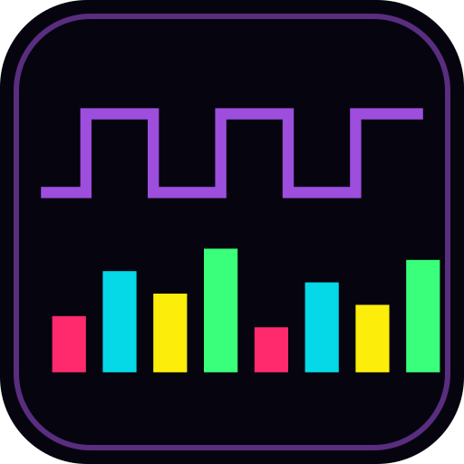

Chiptune en tu navegador · 4 canales · 16 pasos
Clic prende o apaga una nota · arrastra para pintar · Espacio play/stop · teclas A S D F G H J K tocan el lead en vivo.
Todo el sonido se genera con la Web Audio API: ondas cuadradas, triangulares y ruido, como una consola de 8 bits.